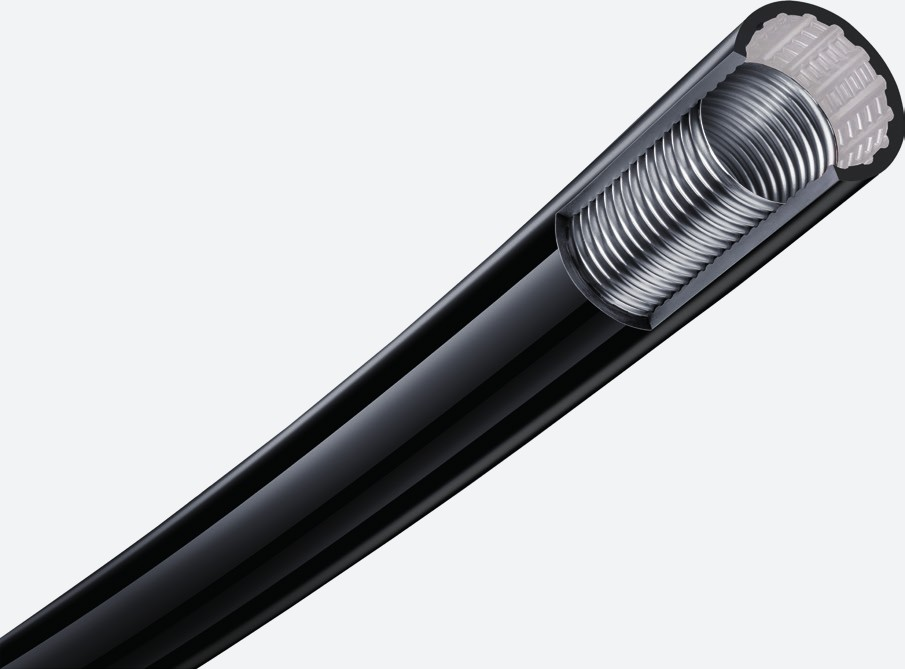
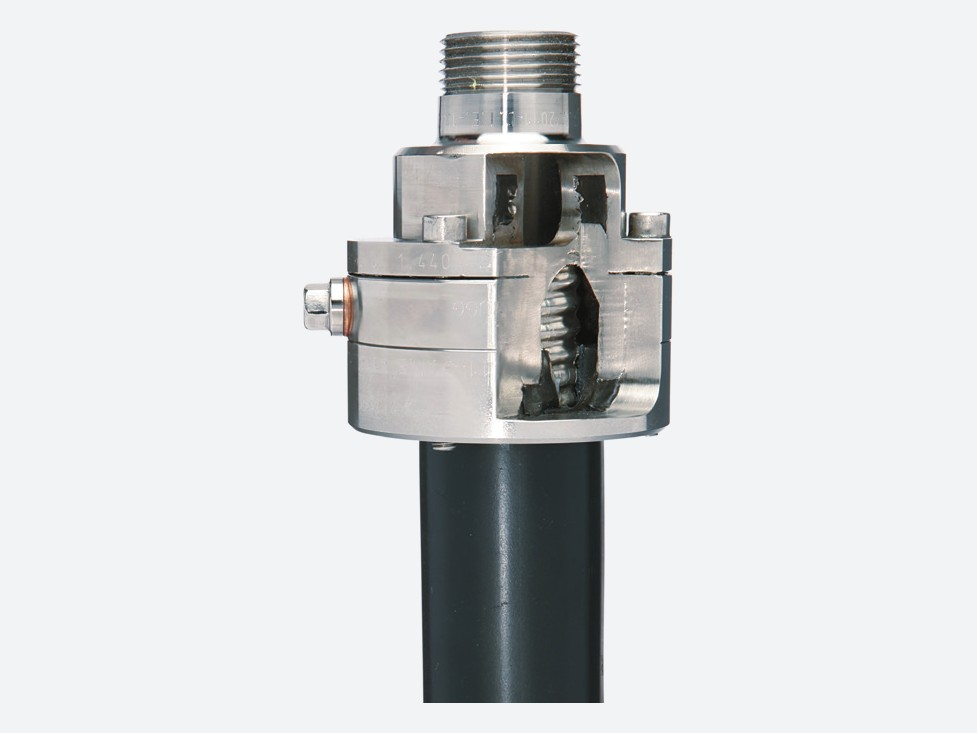
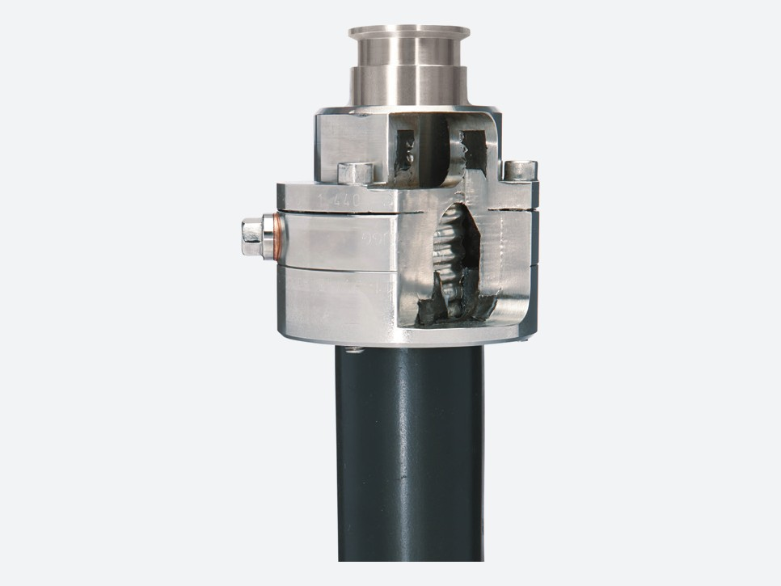
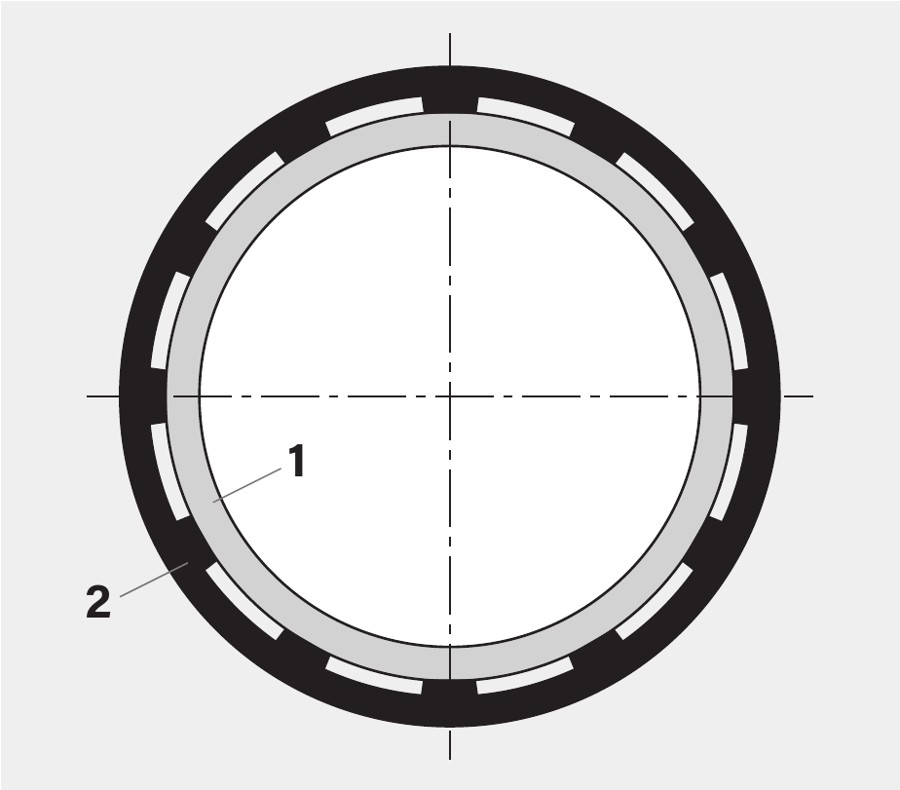
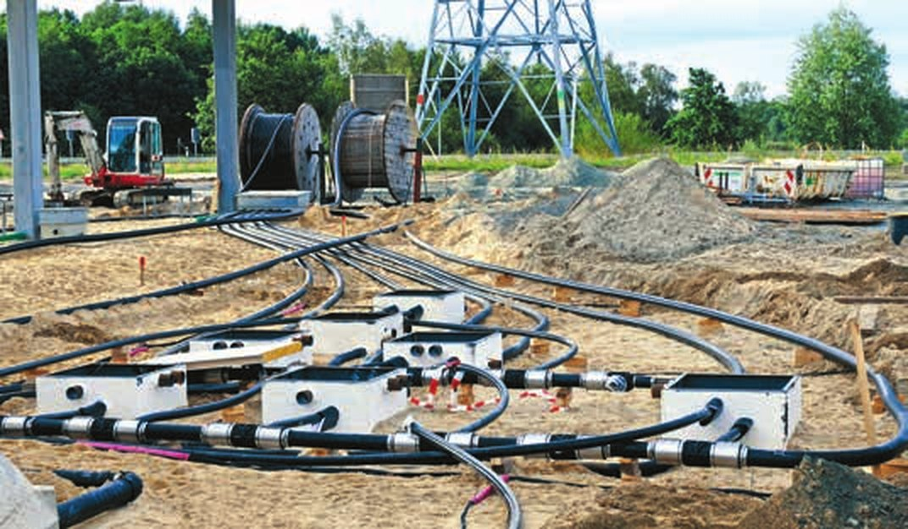
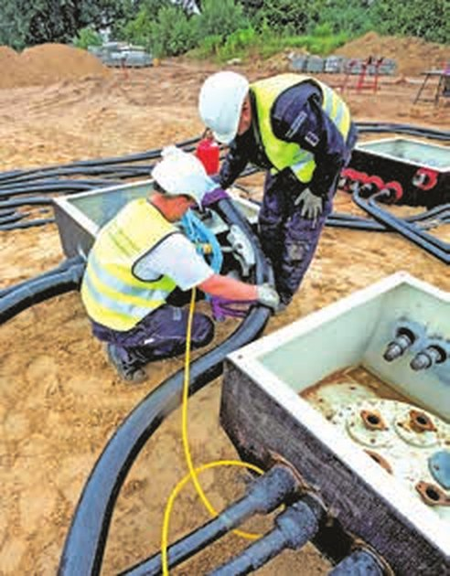
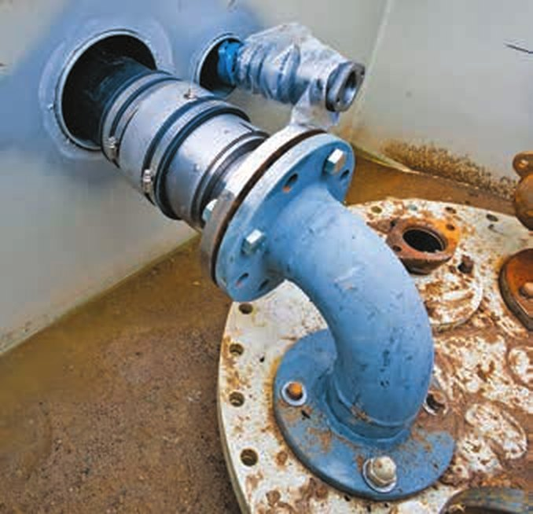

Why SECON-X
Six reasons to specify it.
- 0 weldson site, no open flame
Fast, weld-free installation
Delivered in coils at the required length, cut on site, end fittings assembled with common tools. That keeps downtime short on retrofits of operating stations.
- 1,000+ ft(305 m) and more in one piece
No joints between start and end
SECON-X is made in "endless" lengths. Intermediate connections and transition sumps, the usual leak points, are not needed.
- 2 wallsinterstitial space over the full length
Leaks are contained and monitored
Channels between primary and secondary pipe carry any leaking product safely inside the pipe. Every end fitting has a test port for testing and leak monitoring.
- 0 loopsself-compensating
Takes up its own expansion
The corrugated primary pipe absorbs thermal expansion like a compensator. No expansion bends, and no anchor points when the pipe is laid in the ground.
- 18 inmin. bending radius, 1 in size (450 mm)
Bends around obstacles
Bent on site with the bending machine, at tight radii where needed. Unlike plastic pipe there is virtually no recoil once bent.
- 316Lstainless steel primary pipe
Impermeable and corrosion-proof
Resistant to current fuels including ethanol, biodiesel and blends, and it prevents permeation. No additional cathodic protection is needed.
Where it fits
One fuel line for retail gas, DEF, marinas and industry.
Used in more than 25,000 installations worldwide, underground, above ground or both in one run.
| Gas stations and tank facilities | Suction, pressure, fill and vapor return lines |
| DEF | Diesel exhaust fluid lines, same pipe and fittings |
| Marinas | The flexible pipe follows tidal movement; no joints above the water |
| Industry and commercial | Above-ground fuel installations; the jacket is UV protected |
| Retrofits | Weld-free and fast, so the station is back in operation sooner |
| Media | Automotive fuels including ethanol, biodiesel and blends, marine and jet fuels, DEF; paraffinic diesel to EN 15940 (HVO, XTL) |
System
A corrugated stainless steel primary pipe inside a fluted secondary pipe.

| Primary pipe | Helically corrugated stainless steel 316L (1.4404) |
| Secondary pipe | PA/LDPE, internally fluted, UV protected |
| Sizes | 1 in, 1½ in, 2 in and 3 in |
| Max. operating pressure | 145 psig (10 bar) for 1 in to 2 in; 50 psig (3.5 bar) for 3 in; or full vacuum |
| Operating temperature | −13 °F to +122 °F (−25 °C to +50 °C) |
| Secondary containment, closed service | 50 psig (3.5 bar), sizes 1 in and 1½ in |
| Secondary containment, open service | 5 psig (0.35 bar), all sizes |
| Leak monitoring, vacuum | −8.7 psi (−0.6 bar), all sizes |
| Leak monitoring, pressure | Up to 50 psig (3.5 bar) for 1 in and 1½ in; up to 5 psig (0.35 bar) for 2 in and 3 in |
| Monitoring | Underground installations only |
| End fitting | 316L stainless steel, fuel-resistant elastomeric seals on primary and secondary pipe, test port; NPT thread or EZ-Fit |
| Corrosion protection | No cathodic protection needed |
| Approvals | UL 971A (cULus); paraffinic diesel fuels to EN 15940; EPD |



Range
Four sizes, one end fitting system.
All sizes are supplied in coils at the length your project needs and are cut on site.
SECON-X pipes
| Size | Nominal ID | Inside diameter | Outside diameter | Max. operating pressure | Min. bending radius | Weight | Volume, primary pipe | Volume, interstitial | Service per UL |
|---|---|---|---|---|---|---|---|---|---|
| 1" | 1 in (DN 25) | 1.2 in (30 mm) | 1.7 in (44 mm) | 145 psig (10 bar) | 18 in (450 mm) | 0.52 lb/ft (0.78 kg/m) | 0.06 gal/ft (0.8 l/m) | 0.006 gal/ft (0.08 l/m) | open, closed |
| 1½" | 1½ in (DN 40) | 1.9 in (48 mm) | 2.6 in (66 mm) | 145 psig (10 bar) | 24 in (600 mm) | 1.18 lb/ft (1.76 kg/m) | 0.16 gal/ft (2.0 l/m) | 0.015 gal/ft (0.19 l/m) | open, closed |
| 2" | 2 in (DN 50) | 2.4 in (60 mm) | 2.95 in (75 mm) | 145 psig (10 bar) | 30 in (750 mm) | 1.30 lb/ft (1.94 kg/m) | 0.24 gal/ft (3.0 l/m) | 0.017 gal/ft (0.21 l/m) | open |
| 3" | 4 in (DN 100) | 3.9 in (98 mm) | 4.7 in (119 mm) | 50 psig (3.5 bar) | 42 in (1,050 mm) | 3.15 lb/ft (4.7 kg/m) | 0.68 gal/ft (8.4 l/m) | 0.06 gal/ft (0.74 l/m) | open |
Values from the SECON-X Data Sheet (edition mark US 02/22). Minimum bending radius with bending machine. The 3 in pipe has a nominal inside diameter of 4 in (DN 100). Metric values govern; US values were checked and four were corrected against the data sheet: outside diameter 2 in pipe 2.95 in (data sheet 2.9), bending radius 3 in pipe 42 in (41), primary volume 3 in pipe 0.68 gal/ft (0.67), interstitial volume 1 in pipe 0.006 gal/ft (0.007).
Connections and accessories
| Component | Description | Sizes |
|---|---|---|
| End fitting, NPT thread | 316L stainless steel, elastomeric seals, test port | 1 in to 3 in |
| End fitting, EZ-Fit | 316L stainless steel, elastomeric seals, test port | Sizes on request |
| Collar and split loose flange* | Flanged connection on the end fitting; collar 316L (1.4404), flange steel | DN 25 to DN 100 |
| Through-connection, double-walled* | Joins two pipe lengths, compression type; non-detachable after installation | DN 25 to DN 100 |
| Manhole and pipe sleeve entry* | Two-part spacer and shrink sleeve for standard pipe sleeves | DN 25 to DN 100 |
| Leak detectors* | For permanent monitoring of the interstitial space | On request |
* From the SECON-X Technical Details (EN, May 2020, metric, European range). Availability for North America on request.
Installation
Unroll, bend, connect. No welding, no open flame.
SECON-X is laid from the coil or reel straight into the trench, cut on site and connected only at its two ends. Installation is done by trained personnel.



Training
Fitting training on request.
BRUGG Pipes trains your crew in assembling the SECON-X end fittings before the first installation. Send us your project and preferred date.
Documents
Everything you need, one file each.
- Data SheetDescription, sizes and pressure ratings, technical data of all four sizes2 pages · BRUGG originalDownload PDF
- Technical DetailsSystem description, fittings, pressure loss diagrams, tips for laying, references20 pages · BRUGG original, metricDownload PDF
- Certificate of Compliance ANSI/CAN/UL/ULCUL certificate for SECON-Xbruggpipes.comDownload PDF
- Certificate EPDEnvironmental Product Declarationbruggpipes.comDownload PDF
Contact
Send us your site plan. We size it and price it.
BRUGG Pipes supports your project with pipe sizing, pressure-loss data, routing and fitting training.